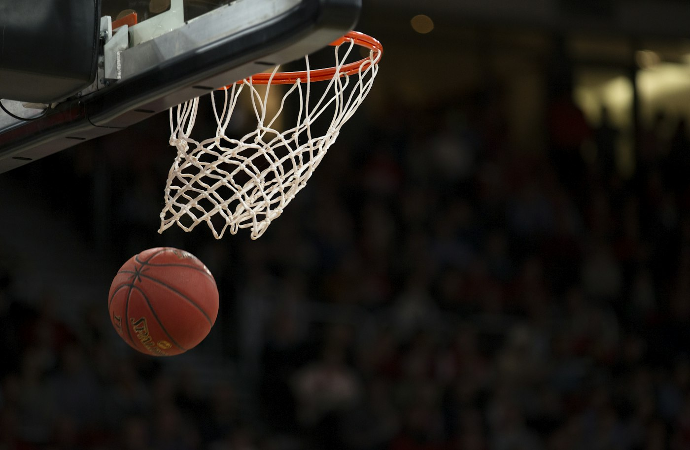

Basketbola Nasıl Başladım?

Basketbola yaklaşık 10 yıl önce başladım. İlk dönemlerimde boyumun uzun olması nedeniyle uzun oyuncu pozisyonlarında oynuyordum. Ancak ilerleyen yıllarda boyumun beklediğim kadar uzamaması nedeniyle uzun oyuncu pozisyonundan guard pozisyonuna geçiş yaptım. Bu değişim, oyun tarzımın da zamanla farklılaşmasını sağladı. Guard pozisyonuna geçtikten sonra özellikle şut yeteneğime, top kontrolüme ve bire bir hücum becerilerime odaklandım. Zamanla şut, basketboldaki en önemli özelliğim hâline geldi. Bunun yanında crossover, dripling ve adam eksiltme konusunda da kendimi geliştirdim. Özellikle dış şut tehdidimi kullanarak hücumda etkili bir oyuncu olmayı hedefledim. Basketbol yolculuğumda abim Çağdaş Altunkaya'nın önemli bir yeri oldu. Kendisiyle çalıştığım dönemde hem basketbol becerilerimi geliştirdim hem de oyuna bakış açımı değiştirdim. Büyükçekmece Atletik ve Büyükçekmece Basketbol bünyesinde edindiğim deneyimler de gelişimime önemli katkılar sağladı. Yaklaşık 10 yıllık bu süreçte basketbol bana disiplin, sabır, mücadele ve takım çalışmasını öğretti. Her ne kadar geçmişte birçok deneyim yaşamış ve önemli aşamalardan geçmiş olsam da basketbol hikâyemin sona erdiğini düşünmüyorum. Hâlâ gerçekleştirmek istediğim hedeflerim, kendimi geliştirmek istediğim yönler ve ulaşmak istediğim seviyeler var. Benim için basketbol henüz tamamlanmamış bir hikâye ve bu hikâyenin devamında gerçekleştirmek istediğim birçok şey bulunuyor.